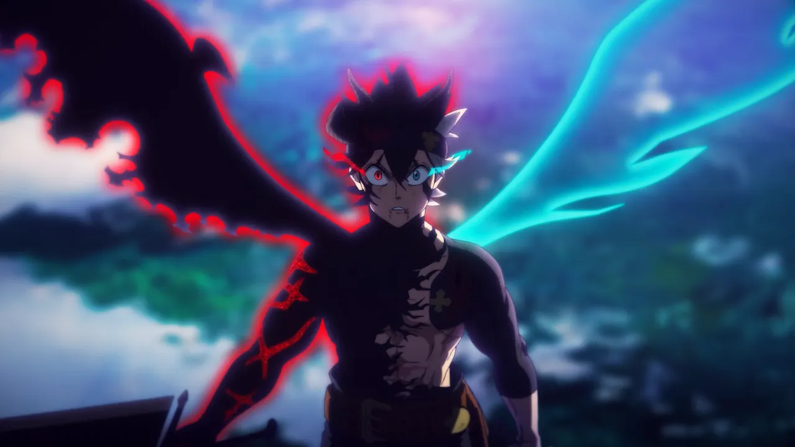

Asta
Asta é o protagonista do anime Black Clover. Ele nasceu sem poder usar magia em um mundo onde todos têm habilidades mágicas. Apesar dessa desvantagem, Asta treina incansavelmente para se tornar o Rei Mago, contando com sua força física excepcional e sua rara habilidade de anti-magia, que lhe permite anular qualquer feitiço.